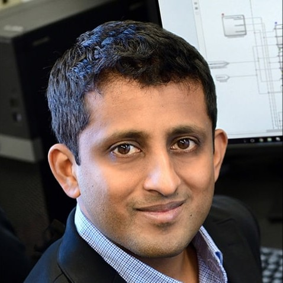

Chethan Pandarinath
Monday, December 3rd, 2018
Inferring single-trial neural population dynamics using sequential auto-encoders
Neuroscience is experiencing a revolution in which simultaneous recording of thousands of neurons is revealing population dynamics that are not apparent from single-neuron responses. This structure is typically extracted from data averaged across many trials, but deeper understanding requires studying phenomena detected in single trials, which is challenging due to incomplete sampling of the neural population, trial-to-trial variability, and fluctuations in action potential timing. We introduce latent factor analysis via dynamical systems, a deep learning method to infer latent dynamics from single-trial neural spiking data. When applied to a variety of macaque and human motor cortical datasets, latent factor analysis via dynamical systems accurately predicts observed behavioral variables, extracts precise firing rate estimates of neural dynamics on single trials, infers perturbations to those dynamics that correlate with behavioral choices, and combines data from non-overlapping record- ing sessions spanning months to improve inference of underlying dynamics.
Dr. Pandarinath is an Assistant Professor of Biomedical Engineering and Neurosurgery at Emory University and Georgia Tech. His research centers on understanding how large populations of neurons in the brain perform computations and represent intention, and using these insights to develop high-performance, robust, and practical assistive devices for people with disabilities and neurological disorders.
Dr. Pandarinath did his undergraduate training at North Carolina State University in Computer Engineering and Physics, and his PhD in Electrical Engineering at Cornell University. He worked with Prof. Sheila Nirenberg to use machine learning and information theory to understand how the eye transmits information to the brain, and to develop strategies to restore vision in cases of retinal degeneration, based on optogenetic stimulation of retinal ganglion cells. Then, as postdoc at Stanford, he worked with Profs. Jaimie Henderson (Neurosurgery) and Krishna Shenoy (Electrical Engineering) to develop intracortical brain-machine interfaces (BMIs) for people with paralysis, as part of the BrainGate2 clinical trial. His work demonstrated the fastest communication rates ever shown by people with paralysis using a BMI. Most recently, he has focused on developing methods to uncover the dynamics of large ensembles of neurons, using techniques from an emerging field of computer science and artificial intelligence known as deep learning.
Dr. Pandarinath was recently named a K12 scholar through the Interdisciplinary Rehabilitation Engineering Research Career Development Program administered by Northwestern University, and was previously a Stanford Dean’s Fellow, a finalist for the Sammy Kuo Award in Neuroscience at Stanford, and received a postdoctoral fellowship from the Crain H. Neilsen Foundation for Spinal Cord Injury Research.